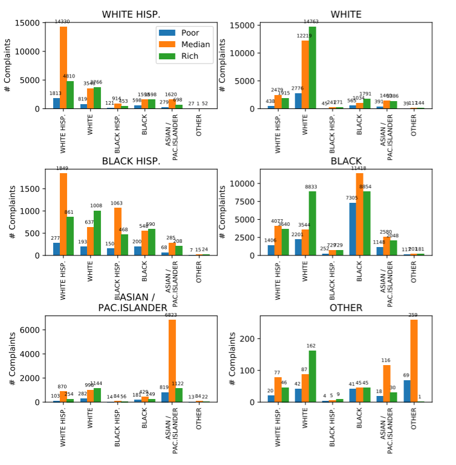

Projects
Library Database and Application - May 2020
Together with a classmate, we built a library database using MySQL. In the database, we included tables for books, ebooks, dvds, cardholders, employees, rooms, and much more. Our database followed the constraints of third normal form. In addition to the database, we created a GUI to interact with it and to perform operations on the database. The GUI allowed a cardholder to login and browse through books, checkout books and dvds, renew books and dvds, and view personal information (including late fees). Additionally, an employee could login, browse through books, and return books and dvds.
Analysis of the Correlation between Income Level and Racial Crimes - December 2019
Do people in higher income areas tend to commit crimes against their own race more than
those in in lower income areas? To answer this, I used two data sets. The first was a file
6.5 million complaints of poeple in New York City. I used Python 3 to filter and prepare
the data, including using a module to transform the provided coordinates into zip codes.
The second data set was a file of every zip code in the United States and its corresponding
average income level. Using Spark, I combined and filtered the data sets until each zip code
in New York City was paired with the corresponding total count of crimes of each race-to-race pair.
This data was saved into two files. The first file contained aggregated data from poorest,
richest, and average areas. This data was used to create an overall picture of the results.
See graph below.
{kind=link}
The second file contained detailed data on each race and zip code. I used this data to create six bargraphs - one for each race. Each graph showed the quantity of complaints against each race, and this data was split by income level. See graphs below.
{kind=link}
All of these graphs were created using matplotlib, a Python module. This entire project was created and executed in a Linux environment.
Cuckoo Hash Table Module - May 2019
I developed a cuckoo hash table, a data structure with a constant find time. This data structure stores key-data pairs by hashing into one of two arrays. If there's already a key-data pair there, then it gets hashed into the other array. Through using two hash tables instead of one, collisions are resolved. It was written in Python 3 and was vigorously tested with Pytest. Click here for more information about the data structure.
Graphical Spirograph Simulator - December 2018
I developed a graphical simulation of a Spirograph, including choices of gear sizes, hole placement, constant and varying ink color, and many other features. The software realistically visually simulates the progression of the inner gears inside the teeth of the outer ring as an accurate Spirograph pattern is drawn. The entire simulation was written from scratch in Python 3, using a tkinter-based simple graphics library, without the use of any specialized game or animation modules. This project was selected by the CS department chair to appear in the annual project highlight “demo reel”.
Stern College 2018 Demo ReelClick here to see a photo collage of the simulator. (Some of these photos were taken at earlier stages of the simulator's creation.)